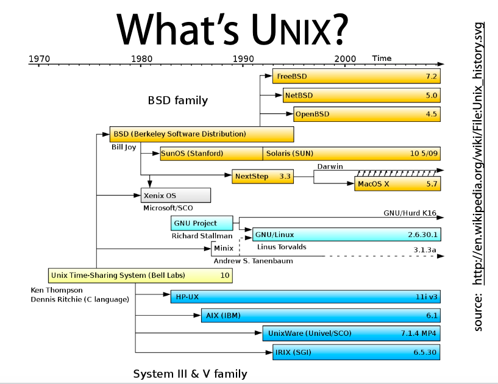
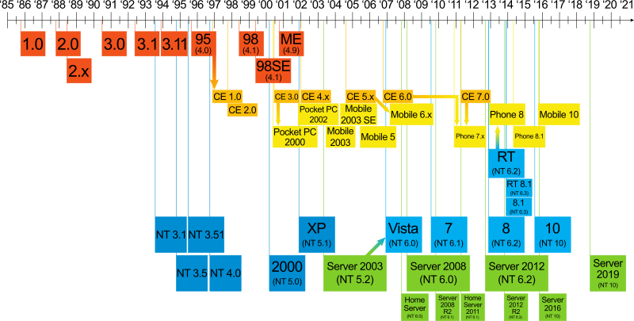

About <<
Previous Next >> 程式儲存
學習程式
機械設計專長的工程師除了熟悉 Windows 操作系統外, 之所以還必須學習操作 Unix 系列的系統, 是因為機械設計流程牽涉許多機電資相關跨領域專長細節, 過程中需要透過集中或分散式架構與多人進行協同, 能夠將編寫程式的平台擴及 Windows 與 Unix 操作系統 (包含 Linux 與 MacOS), 預計可增進配置系統的範圍與彈性, 強化機械設計工作效能.
在學習各種電腦操作系統的過程, 除了一般 GUI 文字編輯器外, 在 Unix terminal 中, 還必須學習利用純文字介面編輯器, Learning_the_vi_Editor.pdf 執行文字資料編輯.
以下為與 Unix 及 Windows 操作系統有關的開發年表:

Windows OS versions:
(Source: https://en.wikipedia.org/wiki/Microsoft_Windows)
學習計算機程式語言的態度建議: https://learnpythonthehardway.org/book/intro.html
- 必得花工夫才學得來 (The hard way is easier, ref1, ref2)
- 自己讀資料自己刻每一行程式碼 (Focus on reading and writing (learn how to touch typing), ref1, ref2, ref3)
- 要注重每一個細節 (Pay attention to every detail, ref1, ref2)
- 要能發現差異 (To be able to spot the differences, ref1, ref2)
- 千萬不要只是複製貼上 (Do not just copy-paste)
- 多觀看相關操作示範影片 (Watch the related videos)
- 多練習而且要不斷學習 (Practice more and keep learning)
- 學習如何問一個好問題 (Learn how to ask a good question)
計算機程式學習 Python 目標: 編寫可以用於機電資自動化整合系統設計與模擬用的網際程式.
Web Browser <-> Client <-> Brython <-> Flask <-> Server <-> RoboDK, CoppeliaSim and Webots
Online courses:
https://kmolyuan.github.io/program-learning/index.html
https://www.youtube.com/watch?v=Ps8jOj7diA0&list=PL8ED50412A17D4C8B (Stanford) - 27 lectures
https://www.youtube.com/watch?v=8DvywoWv6fI (Michigan) - 13:40:09
https://www.youtube.com/watch?v=rfscVS0vtbw (Freecodecamp) - 4:26:51
Examples:
https://medium.com/@patrickbfuller/a-simple-flask-app-edeed75dbee2
https://github.com/Patrickbfuller/simple_flask
https://github.com/mileserickson/flask-brython-example
https://pypi.org/project/brython-server/
https://github.com/andy31lewis/brySVG
https://github.com/dunossauro/todo_list_flask_brython
https://github.com/DarthBayo/Encrypt
https://github.com/chfw/brython-pack
https://github.com/rayluo/brip
https://github.com/rayluo/brython-project-template
https://github.com/rayluo/draggable-svg
https://github.com/Shohrab-Hossain/Tic-Tac-Toe-web
https://github.com/denisecase/chapstack
https://gitlab.com/sammdu/bot-tac-toe/
https://github.com/mdecourse/lookupdict
https://github.com/mdecourse/scissor-rock-paper2
https://github.com/mdecourse/wcms-scrum1
學習運用 Python:
KMOLab 認為, 機械設計工程師在大一之所以先學習運用 Python, 是因為透過網際 Python 的教學, 可以快速解決一些簡單的工程問題, 加上網際 HTML 與 WebGL 中的 Canvas, 學員可以透過動畫與簡單線上遊戲, 逐步了解變數, 函式, 重複迴圈, 判斷式, 滑鼠事件與基本物件導向程式的概念.
接下來若再能透過 Flask 與 SolidWorks (範例), Inventor (範例) 及 NX12 (範例) 的 API 進行互動, 使用者就可以在先前電腦輔助繪圖的技術能力中, 培養參數化與動態系統對於協同產品設計的配置能力.
在此一學習程式的過程中, 使用者會先接觸 Python 以及 Javascript, 隨著網際內容管理的需求, HTML 與 CSS 的基本運用就會逐一成為必要能力.
由於 Github Pages 不允許伺服 __init__.py 檔案, 因此必須將 ggame 採用 https://brython.info/static_doc/en/import.html 中 Optimization 的方式轉為 brython_modules.js 後直接以 script 標註導入頁面.
將 ggame 中的 Brython 程式碼轉為 brython_modules.js 的方法:
在可攜系統中的 Python 安裝 brython 模組: pip install brython
將所安裝 brython 模組中的 brython_stdlib.js 複製一份到 ggame 倉儲中, 確定目前 ggame 目錄架構為:
brython_stdlib.js
ggame
意即 ggame 目錄中有 brython_stdlib.js 與 ggame brython 模組原始碼.
接下來執行 y:\tmp\github\ggame>python -m brython --modules
完成後, 就可以在 y:\tmp\github\ggame> 目錄中建立 brython_modules.js
以本頁面的作法是將 ggame 所需的 graphics 檔案放至 images 目錄中, 而 brython_modules.js 則放至 downloads 目錄後, 以 /downloads/brython_modules.js 放入 script 標註中引用.
Python 3 官方教材: https://docs.python.org/3/index.html
Python tutorial: https://docs.python.org/3/tutorial/index.html (英文)
Python tutorial: https://docs.python.org/zh-tw/3/tutorial/ (中文)
Programming with Python (校園網路下載電子書)
利用演算法 (Algorithms) 與資料結構 (Data Structures) 解題 (英文) (來源)
Algorithms.pdf
The Algorithm Design Manual (校園網路下載電子書)
網頁上的 Python - Brython: https://www.brython.info/static_doc/en/intro.html (解譯式)
Brython Gallery
網頁上的 Python GUI- Flexx: https://flexx.readthedocs.io/en/stable/ (轉譯式)
學習運用 C:
過去機械設計工程師學習 C, 或許著眼在數值分析, 期望透過 C 程式解微分方程式, 對系統模型進行最佳化分析, 但是現在使用 Python + numpy + scipy + matplotlib + Cython, 不僅可以快速建立系統模型, 一旦透過 Cython 轉換為最終的編譯程式, 執行速度也可以很接近 C, 因此目前機械設計工程師之所以仍需要學習 C 的原因, 已經轉為機電系統控制, 期望透過 C 的可攜性, 能夠在各種控制硬體 (晶片) 上進行取捨.
尤其現在的個人電腦已經全面採用 UEFI 開機, 機械設計工程師在機電資整合產品開發流程中, 對於運用 C 程式編寫電腦底層的軟體元件有較大的空間 (相對於之前的 BIOS 可能需要採組合語言編寫).
C_Programming.pdf
EssentialC.pdf
ModernC.pdf
gnu_c_programming_tutorial.pdf
About <<
Previous Next >> 程式儲存